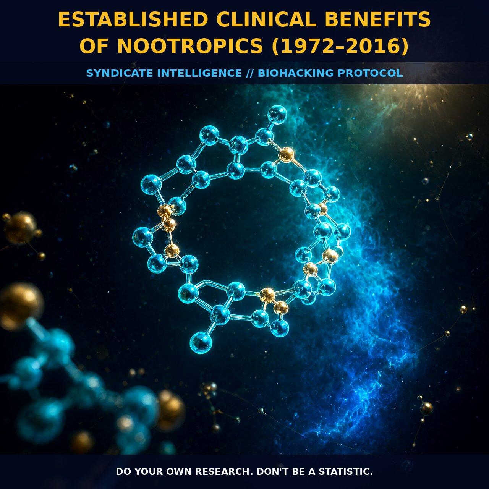

Endogenous Modulation: The Pharmacological Architecture of Nootropic

1. Architectural Foundations of Nootropic Efficacy
The operational definition of nootropics, established by Dr. Corneliu E. Giurgea in 1972, rests on a precise architectural foundation. Rather than introducing foreign chemical structures, effective nootropics modulate endogenous neurotransmitter systems. This low-toxicity pathway enhances learning and memory not through artificial stimulation of neural firing, but by optimizing the chemical environment to support natural signal transmission.
Primary mechanical action focuses on increasing the concentration and availability of specific neurotransmitters responsible for encoding information and retrieving stored data. By ensuring that these key chemicals are readily available within neural networks, nootropics facilitate a more efficient flow of cognitive signals without inducing the jittery instability often seen with simple stimulants.
2. Cerebral Hemodynamics and Structural Influence
Beyond chemical signaling, nootropics exert a critical structural influence on cerebral hemodynamics by modulating vascular tone within the central nervous system. The widening of blood vessels facilitates enhanced perfusion, ensuring that oxygen and essential nutrients are delivered more efficiently to active neural tissue.
This improved blood supply directly correlates with increased mental capacity and reduced metabolic fatigue during periods of high cognitive demand. By supporting both the chemical signaling pathways and the physical infrastructure of the brain, these compounds create a synergistic environment that sustains prolonged mental effort, preventing the sharp decline in performance typical of acute stimulant use.
3. Cellular Preservation and Neuroplasticity
Clinical research spanning from 1972 to 2016 confirms that nootropics are not merely transient alertness agents but drivers of cellular preservation. They actively promote cell regrowth while simultaneously decreasing the rate of cellular deterioration, offering a dual-action mechanism against oxidative stress and age-related decline.
This repair of damaged neural tissue is a demonstrated outcome that supports long-term cognitive resilience. By extending biological aging markers in neural populations, nootropics allow brain cells to maintain their structural integrity over time, serving as a preventative measure for cognitive decay and an active tool for neuroplasticity.
4. Performance Enhancement and Stress Regulation
Functioning as performance enhancers within the broader category of Psychotropic Intelligence Enhancement Devices (PIEDs), nootropics stabilize mood and reduce the physiological impact of stress on cognitive output. They calm excessive neural noise caused by high-pressure situations, allowing for greater clarity of focus and improved multitasking capabilities.
This regulatory effect is broadly applicable, supporting both healthy adolescents and cognitively declining elderly individuals. By uncoupling mental performance from emotional volatility, the reduction in anxiety and depressive symptoms ensures that cognitive resources are allocated to information processing rather than stress response management.
5. Tactical Implementation and Dose-Response
Sustained neurological benefits require a protocol that prioritizes consistency over acute dosage spikes. Regular use is essential for measurable improvements in concentration, mood, and learning abilities, as the accumulation of therapeutic effects requires time to reach a steady state in neural receptors.
Dose-response relationships suggest that lower-to-moderate amounts are often sufficient to achieve optimal results without inducing tolerance. Individuals should undertake due diligence to select stacks that address specific needs—whether memory retention, focus amidst distractions, or protection against decline. The goal is not an overnight transformation, but a steady elevation of mental function through proven mechanisms.
Prostar Life Hack
Prostar Life Hack: Prioritize consistency over intensity. Establish a daily low-to-moderate dose regimen to reach receptor steady state, and stack compounds that target specific deficits (e.g., vascular tone for perfusion, neurotransmitter precursors for signaling) rather than relying on high-dose monotherapy.
[ AUTHOR: LEAD TECHNICAL RESEARCHER ]
[FRESH ON CHAIN: d3e1ae7bd67aff1a... ]